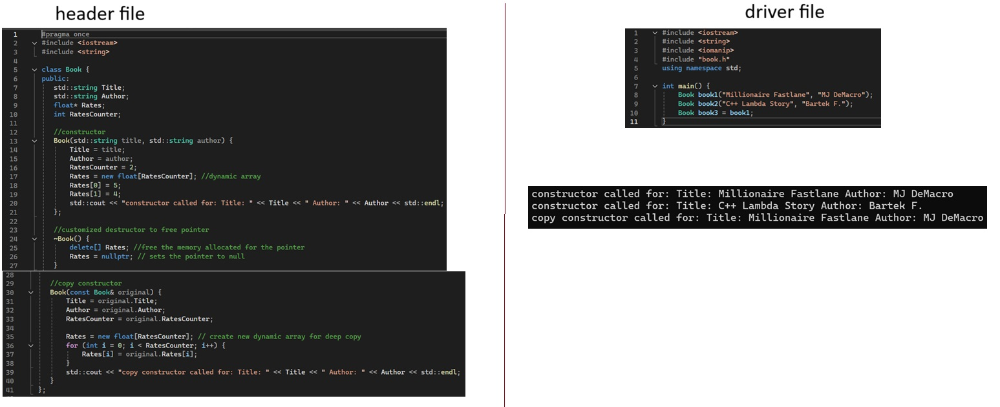

overload constructor is used when a user needs to be able to create objects that
contain a range of different arguements. Depending on the number of arguments entered at object
creation will determine which constructor to use (as long as the number of arguments matches the
number of parameters of the constructor, else it will return an error)
WARNING!!!!
When creating constructor overloads a default constructor cannot be created
else it will create errors!!!
Basic destructor execution
code breakdown
note:
Destructs terminates the variable after it's purpose of the variable for
the function has finished.
copy constructor

code breakdown: header file
Lines 2-3: retrieve libraries
Line 5: initiate class
lines 7 - 10: create memebrs of the class
Lines 13 - 19: create constructor
Line 17: create dynamic array (array only occupies temporary memory)
__lines 18 - 19: elements of the array
Line 20: output string when constructor is called
Lines 24-26: customized destructor
helpful in freeing memory for a reference variable
Lines 30-39: create deep copy
Rules and notes
Rules:
1) copy constructor requires pass by reference
__pass by value creates a copy of the original in which the compiler uses the default copy constructor to perform that task
2) use const to create a deep copy of the original
3) class have a default copy constructor, but when having pointers user must create a customized copy constructor
4) Must create a customized destructor
___default destructor is not effective in freeing memory in pointers
uses of copy constructor
1) a = b, if a is a newly created variable and b is an existing variable, this invokes the copy constructor
__however if a is an existing varibale then this action invokes the assignment operator
2) pass by value invokes a copy constructor
3) Return by value from a function invokes the copy constructor